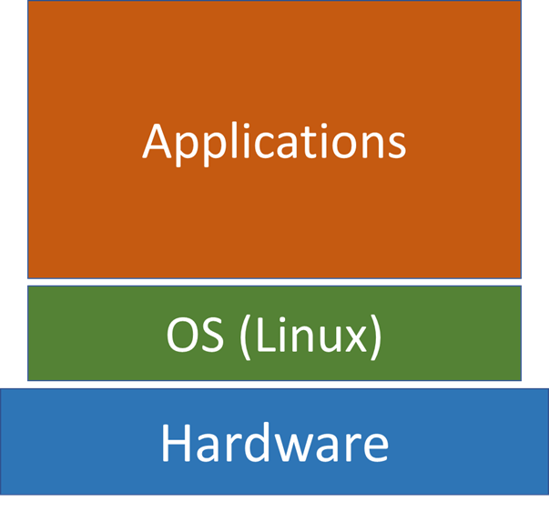
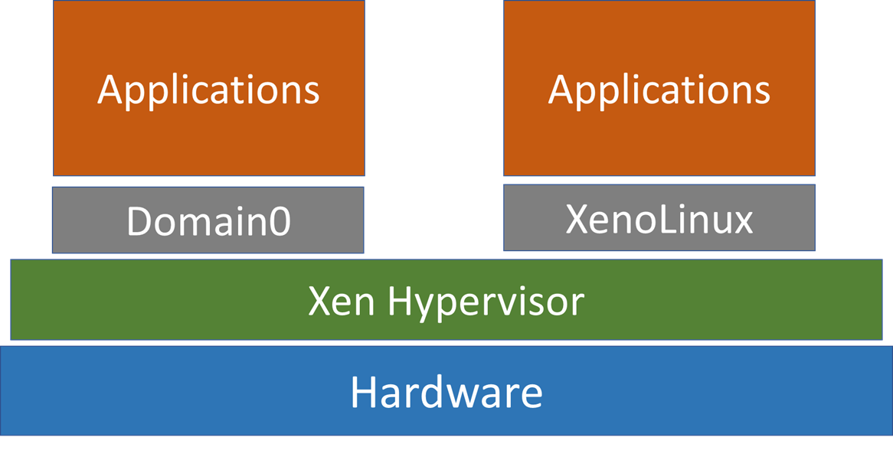
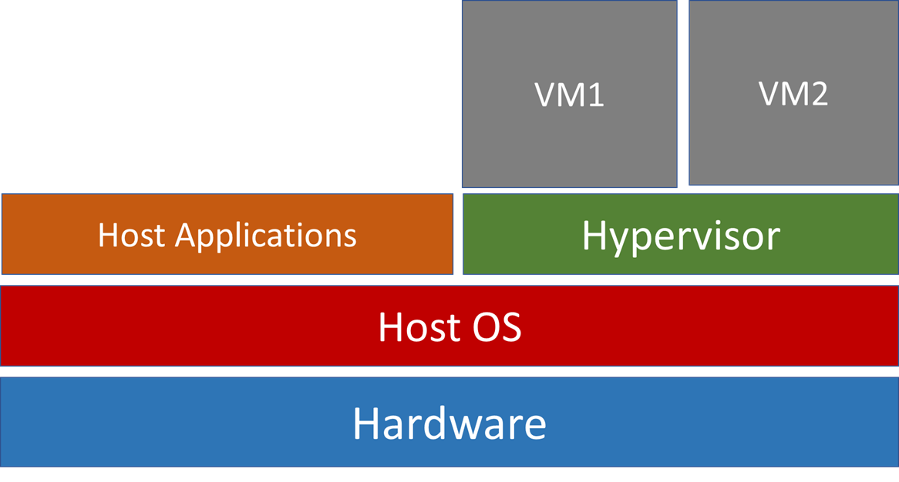

Virtualization technology allows multiple operating systems to share a computer – a running instance of an operating system is called a Virtual Machine
Introduction to Virtualization
Terminologies.
- Host Machine – physical machine VM is running on
- Host OS – OS in the host machine
- Guest OS – OS in the VM
Architecture of a Physical Machine
The OS sits between the hardware and its applications and manages the interaction between application and hardware resources. It is the lowest level software in a machine.

Virtualization Architecture
Embedded
In an embedded architecture, the hypervisor sits in between guest OSes and hardware. Each grey box is called a domain and is a VM – they are managed by the hypervisor.
Properties of Domain0 in Xen
- Domain0 is able to manage and control other guest domains
- Domain0 contain device drivers to access hardware, guest domains cannot access hardware
- When guest domains want to request access to hardware, they are routed to Domain0.
- Multiple guest domains share resources with other guest domains (resources are virtualized).
- Can interact with other VMs

Non-embedded
Hypervisor runs as an application to host OS e.g. QEMU.
These type of systems use a technique called dynamic binary translation technique. This translates an instruction issued in Guest OS to an instruction that can run in the host OS.
This is also why non-embedded architectures are slower than embedded, because every instruction has to be translated.

Abstract of Physical Resources
Inside the hypervisor, hardware is simulated as files – virtual disk (vDisk), virtual CPU (vCPU), virtual memory (vRAM).
- These files are transferred to real hardware when necessary
- This is why in the coursework we create a
.cowfile for QEMU
Life cycles of VMs
In a normal physical machine, you can be in 3 states: Off, Running, or Suspended (Sleep).
In VMs, you have an additional state: Paused
- VM is still resident in the host machine but not allocated CPU.
- When multiple VMs are resident, only 1 VM is allocated CPU at a time (running on the physical machine), other VMs will be paused.
Impact of Virtualization on Security
Below are a list of properties of VMs, and their impact on security.
Isolated
Isolation
In a traditional multi-user OS, all user in the computer can be affected by an attack
In virtualisation, each guest OS is encapsulated and hardware is abstracted
- Each VM accesses separate file systems and memory blocks
- VM technology provides an extra layer of isolation.
Ideally a VM compromised by attackers will not affect the host or other VMs on the host
Isolation and abstraction of VMs provides an additional security over traditional multi-user computers
Transient
Transience
Physical servers are often always on while VMs can be started very quickly and remotely
Typically VMs are turned on only when they are needed, and turned off when they are not used anymore
Limiting operating time of VMs mitigates security risks because we can only infect a machine (physical or virtual) that is on.
However. It is a double edged sword.
When virus hits conventional networks of physical machines, administrators often do the following
- Identify which machines are infected
- Clean up infected machines
- Apply security patches to prevent re-infection
In virtualised environments, infected VMs may appear briefly and disappear before they can be detected making it difficult to identify which VMs are infected.
When performing patch management, virus and vulnerability scanning, the machines must be on. Because VMs are transient and not always on – difficult to fix the vulnerability of infected VMs.
The infected VMs may appear online briefly, infect other VMs and disappear offline before they are noticed making it difficult to eradicate the infection in the system.
As a result, in virtualisation environment worm/virus infections tend to persist at a low level and flare up again at another time.
State Restoring
The virtual disk for a VM is stored as a file on the hypervisor. This allows the hypervisor to record changes to the contents of the virtual disk.
It is easy for VMs to restore to previous states.
State restore provides a virus removal mechanism for infected VMs and helps ensure data integrity.
However, if the hypervisor is compromised then we can’t restore state, and attackers have unlimited freedom and access to the hardware. (Limitation)
Additionally, since it is easy to restore infected VMs many users are not motivated to secure their VMs with virus protection
- 60% of VMs in production are less secure than their physical counterparts, due to this factor
Security Patches
In physical machines, when a new security patch is applied, the machines remain patched. A VM may also get the security patch, but if the user rolls back to a previous state, then the guest OS is no longer patched. It is challenging for system administrators to apply security patch in VMs because they have to
- record when patches have been applied
- evaluate which patches need to be applied again when a VM is restored to a previous state
Furthermore, rolling back a VM may expose vulnerabilities
- re-expose patched vulnerabilities or virus
- re-enable accounts or passwords that have been disabled
- reuse encryption keys/tokens that have been deleted.
Data Lifetime
A fundamental principle for building secure systems is minimising the amount of time that sensitive data remains in a system
In virtualised system, all changes are recorded, which undermines the principle. Moreover, the state changes will be transferred to persistent storage, which again break the security principle.
Low Privilege
In a physical computer, OS is the software that has the highest privilege in the computer
- OS can only be monitored by itself in a physical machine
- If the OS is infected with virus, it cannot be trusted. (Not reliable)
A VM has lower privilege than the hypervisor.
- VMS can be monitored by either the hypervisor, or by an authorised dedicated VM (Domain0)
- The latter is preferred method since it helps keep the hypervisor simple
- The hypervisor gives the dedicated VM the permission to view resources allocated to the monitored VM.
Security Patch
In physical machines, when a new security patch is applied, the machines remain patched ,
A VM may also get the security patch, but if the user rolls back to a previous state, then the guest OS is no longer patched
Therefore, it is very challenging for system administrators to apply security patch in VMs because they have to
- record when patches have been applied
- evaluate which patches need to be applied again when a VM is restored to a previous state
Mobile
Mobility
VMS are not physical, everything about a VM is virtualised as files – makes theft of data easier.
In fact, attackers can access copies of VM that are located on the physical disk of the host machine. Because the Guest OS has no access to that disk, the VM will not show any records of intrusion.
Being offline does not guarantee safety. An attacker can access and modify VM files while the VM is offline. A physical machine must be running to be susceptible.
Easy to Create
In a traditional network of physical machines, all machines have same configurations.
- When there are security vulnerabilities, the same security measure can be applied to all machines
VMs can be created rapidly, each with a unique configuration (VM Sprawl)
- Cannot apply a uniform security measure to all VMs
- The rapid growth of VMs exceeds the administrators’ ability to secure each unique VM
Lack of Identity
In a traditional environment, a machine can be identified by MAC address, Ethernet port number. It is used as a mechanism of non-repudiation – the system has the mechanism to check who did something.
In a virtualised system , there is only one physical MAC address and a Port number, but multiple VMs are running so we cannot use MAC or ethernet port number for non-repudiation anymore.
Other Security Issues
Hypervisor Intrusion
If the hypervisor is compromised, the attacker can access all the VMs.
For non-embedded hypervisor, the hypervisor is a program, running on the host OS
- If it is compromised, all VMs can be accessed
- The host OS will be in danger as well, as the hypervisor converts instructions (dynamic binary translation) for the guest OS into instructions for the host OS
- This means he instructions sent by hypervisor can no longer be trusted as it could be malicious.
Security due to Inter-VM communication
“VM-to-VM” attacks means that attackers user one VM to access or control other VMs on the same hypervisor.
Attacks can be achieved by inter-VM communication. A malicious VM can potentially access other VMs because all VMs share resources (memory, network connections etc.) on the hypervisor.
One example is with the embedded architecture of virtualization.
Domain0 is connected to all guest domains and inter-VM communication happens through the hypervisor. An attack on the shared memory segment of the hypervisor can use 1 VM to attack another VM.
Denial of Service
An improperly configured hypervisor can allow a single VM to consume all resources, starving other running VMs.
However, the solution to this is simple. Hypervisors should prevent any VM from gaining 100% usage of any resources.